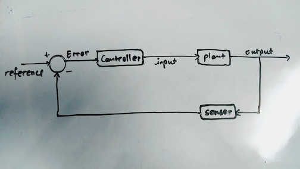
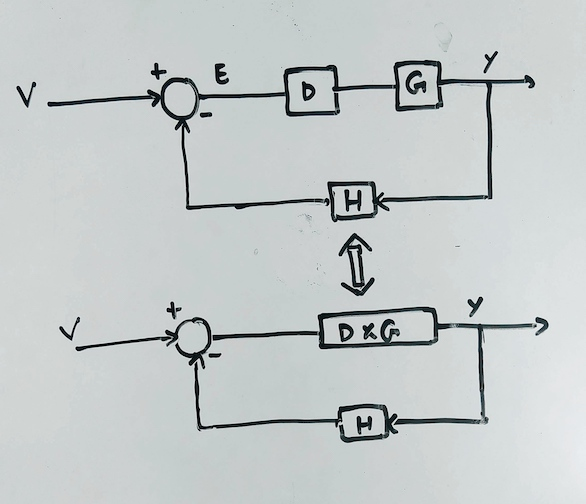
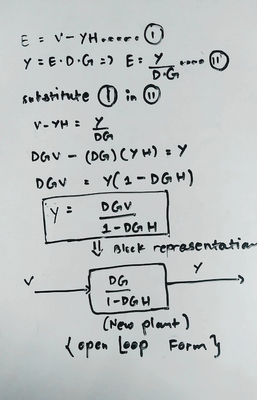

Introduction to Control systems
This article is an introduction to the control system and also touches some of the control theory. This is the first of many articles which will try to explain the concepts of classical control theory. To understand control theory, it is essential to understand the basic terms and concepts. Control system is the mechanism that alters the future state of a system. Control theory is the strategy to select the appropriate inputs to the system in order to get the output that we desire. All control systems have two parts, the first is the system which we want to control and the input to the system. The system which we want to control is also referred to as the plant. If an input is given to the plant, a certain output is produced and if this output has no influence on the input or if the input signal is not affected by the produced output then, this type of control system is called open loop system. A widely used example of an open loop system is dish washer. Dishwasher is an open loop system because the input to the dishwasher is the wash time which we input and the output is the cleanliness due to washing. The output does not affect the input because, the output which is the cleanliness does not alter the input which is the washing time. If we command the dishwasher to run for twenty minutes, the dishwasher will run for the exact time regardless of the necessary cleanliness achieved before the twenty minutes. Likewise, the dishwasher also stops after twenty minutes regardless of the dishes still being dirty.

What if the input to the system is affected by the output produced by the system? The primary disadvantage of the open loop system is there is no way to compensate for the variations in the output of the system. To account for the variations, the input to the system must also be varied with the variation of the output produced. This type of system is called the closed loop system. The closed loop systems are also referred to as Feedback control , Negative feedback control, Automatic control. The concept of the closed loop control system is simple. The output produced by the system is sensed by the sensors, this output is compared with the reference signal. The reference signal is the output that we desire from the system. By comparing the reference with the output, error is calculated which is fed to the controller and the controller generates the necessary input to the system and this continues on until the state that we desire in the system is met. The output of the system is fed back to calculate the error to feed to the controller. Hence the name, Feedback control. Let’s go back to our example of a dishwasher which we considered an open loop system. The major disadvantage of this dishwasher is that the dishwasher runs for the set period commanded and stops working regardless of the dishes becoming clean early or the dishes still being dirty. The input which is the runtime has no variation with respect to the variation in the cleanliness of the dishes. Now in this same dishwasher, if we add a sensor which senses the cleanliness of the dishes and compare this sensed value with the cleanliness which we want (The reference). We get a cleanliness error and if we use this error to generate appropriate runtime commands to be fed to the dishwasher (The plant), this dishwasher becomes a feedback control system. The input for the dishwasher now varies with the variation of the output of the dishwasher.

We talked about the open loop systems and closed loop systems and how the closed loop systems use controllers to vary the input according to the variations to the output. An important question is how do we select controllers? We definitely need appropriate controllers for different kinds of systems and this strategy that we use to select or design a controller which caters to the needs of the system is the Control Theory. To conclude this article, let’s look at something interesting. First consider a closed loop system. If we refer to the reference by letter V, error as E, the controller as D, the plant as G and the sensor function as H. The control system can be reduced in a way that the plant controller combination can be considered as a modified plant DG.

If we do some algebra and manipulate some terms we can see that the control process can be defined by another form. If we represent this in a block diagram, it transforms into an open loop system with a modified plant. So we just transformed our closed loop system into an open loop system.
